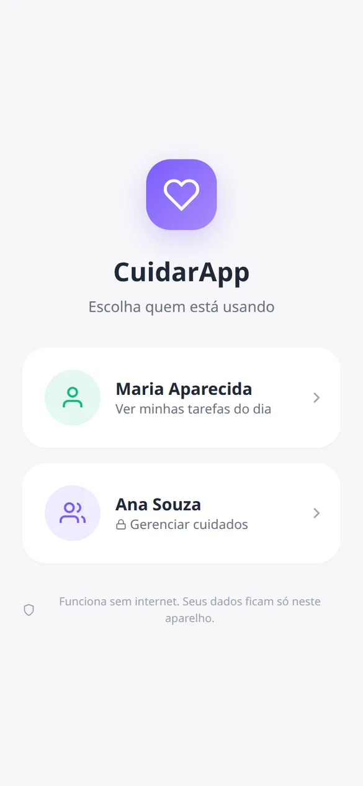

da população tem 60 anos ou mais
São 32,1 milhões de pessoas, segundo o Censo IBGE 2022.
Remédios, água, refeições com proteína, exercícios seguros e humor em um só lugar. O idoso marca o que fez com um toque; o cuidador acompanha, recebe alertas e ajusta a rotina.
Os números da pesquisa que deu origem ao CuidarApp mostram onde a rotina mais falha e onde um acompanhamento simples faz diferença.
São 32,1 milhões de pessoas, segundo o Censo IBGE 2022.
O sedentarismo acelera a perda de força e aumenta o risco de quedas (VIGITEL 2023).
Entre idosos acompanhados em ambulatório, segundo o inquérito IBRANUTRI.
Perda de massa e força muscular que compromete a autonomia (critérios EWGSOP2).
A maioria dos aplicativos cuida de uma parte só da rotina — o remédio, a caloria ou o exercício —, depende de internet e tem telas carregadas. Entre usuários com mais de 65 anos, a taxa de abandono passa de 70%.
Reunir a tríade que a pesquisa aponta como essencial — proteína, hidratação e exercício multicomponente — junto com remédios, humor e segurança, em uma interface grande, clara e que funciona sem internet.
O idoso entra com um toque. O cuidador acessa com senha de 4 dígitos para cadastrar e acompanhar.
Proteína nas refeições, água ao longo do dia e exercícios de força, equilíbrio, marcha e flexibilidade.
Botão de emergência sempre visível, registro de quedas e alerta de mal-estar após o exercício.
Sem cadastro e sem nuvem. Os dados de saúde ficam somente no celular, como pede a LGPD.
Escolha um perfil e toque em cada recurso para ver a tela do aplicativo.
Acompanhar nutrição e exercício juntos traz resultados que nenhum dos dois alcança sozinho.
de força de preensão com nutrição e exercício combinados
na velocidade de marcha após 24 semanas
menos quedas com exercício multicomponente
de adesão ao tratamento com monitoramento digital, contra 42,5% no papel
Registros de alimentação, hidratação e mobilidade são dados sensíveis pela LGPD (Lei nº 13.709/2018). Por isso o CuidarApp foi feito para nunca enviá-los a lugar nenhum.

Toque em Baixar para Android no celular, ou aponte a câmera para o QR code.
Abra o arquivo baixado e permita a instalação de apps desta fonte, se o Android pedir.
Entre como cuidador (senha inicial 1234), troque a senha e cadastre a rotina.
Entregue o celular ao idoso: ele entra com um toque no próprio perfil.
Sim. O download é gratuito, não há anúncios e não é preciso criar conta.
Não. Depois de instalado, o aplicativo funciona totalmente offline. A internet só é usada para baixar o arquivo de instalação.
Sim. Nas configurações, escolha “Este celular é do cuidador”. O cuidador registra as tarefas pelo idoso e o app mostra isso na tela.
Por enquanto o CuidarApp está disponível apenas para Android 8.0 ou superior.
Somente no celular onde o app está instalado. Nada é enviado para servidores, e o cuidador pode apagar tudo nas configurações.
A senha inicial é 1234. Se ela foi trocada e esquecida, limpe os dados do aplicativo nas configurações do Android; isso apaga os registros e volta à senha inicial.
Não. O CuidarApp organiza a rotina recomendada pelos profissionais de saúde e ajuda a acompanhá-la. Remédios, dieta e exercícios devem seguir a orientação deles.